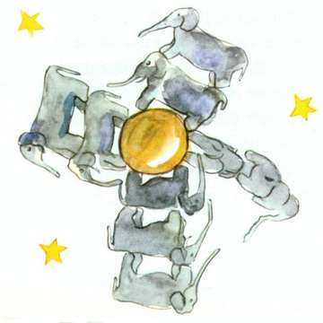
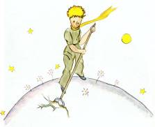

Chaque jour j’apprenais quelque chose sur la planète, sur le départ, sur le voyage. Ça venait tout doucement, au hasard des réflexions. C’est ainsi que, le troisième jour, je connus le drame des baobabs.
Cette fois-ci encore ce fut grâce au mouton, car brusquement le petit prince m’interrogea, comme pris d’un doute grave :
– C’est bien vrai, n’est-ce pas, que les moutons mangent les arbustes ?
– Oui. C’est vrai.
– Ah ! Je suis content.
Je ne compris pas pourquoi il était si important que les moutons mangeassent les arbustes. Mais le petit prince ajouta :
– Par conséquent ils mangent aussi les baobabs ?
Je fis remarquer au petit prince que les baobabs ne sont pas des arbustes, mais des arbres grands comme des églises et que, si même il emportait avec lui tout un troupeau d’éléphants, ce troupeau ne viendrait pas à bout d’un seul baobab.
L’idée du troupeau d’éléphants fit rire le petit prince :
– Il faudrait les mettre les uns sur les autres…

Mais il remarqua avec sagesse :
– Les baobabs, avant de grandir, ça commence par être petit.
– C’est exact ! Mais pourquoi veux-tu que tes moutons mangent les petits baobabs ?
Il me répondit : « Ben ! Voyons ! » comme s’il s’agissait là d’une évidence. Et il me fallut un grand effort d’intelligence pour comprendre à moi seul ce problème.
Et en effet, sur la planète du petit prince, il y avait comme sur toutes les planètes, de bonnes herbes et de mauvaises herbes. Par conséquent de bonnes graines de bonnes herbes et de mauvaises graines de mauvaises herbes. Mais les graines sont invisibles. Elles dorment dans le secret de la terre jusqu’à ce qu’il prenne fantaisie à l’une d’elles de se réveiller. Alors elle s’étire, et pousse d’abord timidement vers le soleil une ravissante petite brindille inoffensive. S’il s’agit d’une brindille de radis ou de rosier, on peut la laisser pousser comme elle veut. Mais s’il s’agit d’une mauvaise plante, il faut arracher la plante aussitôt, dès qu’on a su la reconnaître. Or il y avait des graines terribles sur la planète du petit prince… c’étaient les graines de baobabs. Le sol de la planète en était infesté. Or un baobab, si l’on s’y prend trop tard, on ne peut jamais plus s’en débarrasser. Il encombre toute la planète. Il la perfore de ses racines. Et si la planète est trop petite, et si les baobabs sont trop nombreux, ils la font éclater.

« C’est une question de discipline, me disait plus tard le petit prince. Quand on a terminé sa toilette du matin, il faut faire soigneusement la toilette de la planète. Il faut s’astreindre régulièrement à arracher les baobabs dès qu’on les distingue d’avec les rosiers auxquels ils ressemblent beaucoup quand ils sont très jeunes. C’est un travail très ennuyeux, mais très facile. »
Et un jour il me conseilla de m’appliquer à réussir un beau dessin, pour bien faire entrer ça dans la tête des enfants de chez moi. « S’ils voyagent un jour, me disait-il, ça pourra leur servir. Il est quelquefois sans inconvénient de remettre à plus tard son travail. Mais, s’il s’agit des baobabs, c’est toujours une catastrophe. J’ai connu une planète, habitée par un paresseux. Il avait négligé trois arbustes… »
Et, sur les indications du petit prince, j’ai dessiné cette planète-là. Je n’aime guère prendre le ton d’un moraliste. Mais le danger des baobabs est si peu connu, et les risques courus par celui qui s’égarerait dans un astéroïde sont si considérables, que, pour une fois, je fais exception à ma réserve. Je dis : « Enfants ! Faites attention aux baobabs ! » C’est pour avertir mes amis d’un danger qu’ils frôlaient depuis longtemps, comme moi-même, sans le connaître, que j’ai tant travaillé ce dessin-là. La leçon que je donnais en valait la peine. Vous vous demanderez peut-être : Pourquoi n’y a-t-il pas, dans ce livre, d’autres dessins aussi grandioses que le dessin des baobabs ? La réponse est bien simple : J’ai essayé mais je n’ai pas pu réussir. Quand j’ai dessiné les baobabs j’ai été animé par le sentiment de l’urgence.